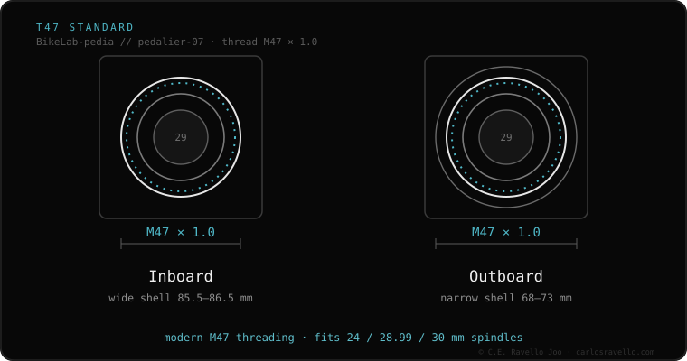

BSA and T47 are both threaded (they screw into the frame and rarely creak), but they use different threads: BSA is 1.37″ × 24 TPI (narrow shell) and T47 is M47 × 1.0 (wide shell). They are not interchangeable. T47's advantage: its wide shell houses stout 30 mm spindles with a good bearing, which BSA can't.
If you have BSA and it works, there's nothing to fix: it's reliable and universal. T47 isn't an upgrade you buy; it's the frame's standard. The comparison matters when choosing a new bike or frame.
Both share the upside of threaded: easy to service and rarely creak. The difference is size. BSA has a narrow shell, built for 24 mm spindles. T47 has a wide shell (like a PF30) but threaded, combining 30 mm spindle stiffness with the peace of mind of threads.

You don't pick between them part by part: your frame decides. If your frame is BSA, stick with BSA: reliable and cheap. If you're buying a high-end frame and can choose, T47 gives 30 mm stiffness without press-fit creak. Both accept Shimano 24 mm and SRAM DUB.
Unsure if your frame is BSA or T47, or which crank to fit? Send us the case: Message us on WhatsApp
For wide shells and 30 mm spindles, T47 offers more stiffness. For reliability and low cost, BSA is still excellent. There's no absolute winner: it depends on the frame.
Not simply: they're different threads. The standard is set by the frame at the factory.
Yes, with the DUB cup matching each standard.
© 2026 BikeLab Studio. Content under CC BY 4.0: you may copy, translate and publish it, even for commercial purposes. Citation is mandatory. Without attribution, the license terminates automatically (CC BY 4.0, §6.a) and the use becomes copyright infringement: we request the removal of the content and its deindexing. · Design and ownership: Carlos Ravello Joo